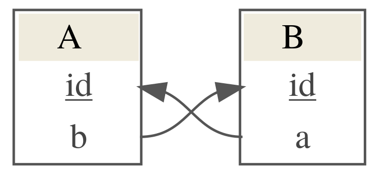

dettl.RmdDettl provides a way to make data tidying and ingestion into a database easier, more testable and more robust. We do that by employing an ETL (extract, transform, load) like workflow to separate out different concerns of your data import and allow testing after each stage.
ETL is a pattern for general copying of data from one or more sources to another destination which expects the data in a different form from the sources. It consists of three basic steps
Extract - Step is responsible for selecting and accessing any required data from relevant sources (local files or DB). The data is read into memory and can be verified by running a set of tests after step has completed.
Transform - Step is responsible for transforming the extracted data into a form ready for loading into the destination database. Expect this is where the bulk of the work will be done. The transformed data can be verified by running a set of tests after the step has completed.
Load - Step is responsible for loading the transformed data into the destination database. A set of post-load tests can be defined which will be run after the data is loaded into the database. If any of the tests fail the DB update will roll back, otherwise changes are committed.
Dettl requires a config at the top level of a repository called dettl_config.yml which describes database connection information. Individual imports are then organised in separate subdirectories and must contain a config file dettl.yml which contains information relating to the import mode, files to be sourced and tests to be run. These subdirectories will be created automatically by using dettl_new.
A typical repository might look like
project_directory
|── import_1
| |── dettl.yml
|── import_2
| |── dettl.yml
|── other imports ...
|── dettl_config.ymlThis needs to be setup manually and contains configuration at the project level used to configure DB connection information for any database which you wish to import to. Note that you must specify a log_table where run information is written after each import. See below for an example setup.
If you want to create a new import within an existing project this can be done by opening the project as an RStudio project and using dettl_new().
import_name <- dettl::dettl_new("person_information")This will create a new directory called person_information prepended with the current date containing: * the default dettl.yml config - by default setup to run in append mode using automatic load * an R file R/extract.R containing a template extract function * an R file R/transform.R containing a template transform function * an R file R/verification_queries.R containing test queries for load stage * 3 test files tests/test_extract.R, tests/test_transform.R, tests/test_load.R containing testthat templates for testing after each stage of the import
If you want to create a new import within a new project then you will need to manually create a new RStudio project and create a dettl_config.yml file. You can then proceed as above.
To develop a complete import you need to implement the extract and transform stages.
Open the created R/extract.R file and implement the templated extract function. This can delegate to other R functions written elsewhere. If you add any other R files they will need to be added to the list of sources in the dettl.yml. The extract code should just read data the required data into memory and do no more. For our simple example we want to read from a csv.
extract <- function(con) { raw_data <- list() raw_data$people <- read.csv("data/people.csv", stringsAsFactors = FALSE) raw_data }
You should also define some tests for this stage in the R/test_extract.R file. These are written using the testthat package. The extracted data is made available via the variable extracted_data which can be used from within the configured test file. An example test to check that our extract function has extracted 3 rows of data would be.
context("extract") testthat::test_that("extracted data contains 3 rows", { expect_equal(nrow(extracted_data$people), 3) })
After completing the implementation of the extract stage you can run just that step to check that the extracted data looks as expected. Note that the directory must be under version control and up to date with remote to run the import. This check is skipped if running in dry_run mode. See Running the import for more details about this. When creating a new import also pass the database which this import is for, this must match one of the databases configured in the dettl_config.yml. See example below for a previously configured example. Note that import_path is the path to an import directory with structure like above.
import <- dettl::dettl(import_path, db_name = "test") import$extract() #> Running extract /private/var/folders/24/8k48jl6d249_n_qfxwsl6xvm0000gn/T/RtmpjWqfLE/file6ad6ffc51eb/person_information #> Running extract tests R/test_extract.R #> extract: #> extract: . #> #> ══ DONE ════════════════════════════════════════════════════════════════════════ #> 🥇 Your tests deserve a gold medal 🥇 #> All extract tests passed. extracted_data <- import$get_extracted_data()
The extracted data can be inspected to ensure it looks as expected.
print(extracted_data) #> $people #> name age height #> 1 Alice 25 175 #> 2 Bob 43 187 #> 3 Clive 76 163
Open the created R/transform.R file and implement the templated transform function. Like the extract stage this can delegate to functions defined in other files providing that the files used are added to the sources block in the config. The transform function should return data as a named list of data frames where each data frame represents a table from the database. The names of the data frames need to match the names of tables in the database. You can write some tests the check the transformed data which will be run automatically after the transform step is run. In addition to user specified tests we check that the returned data conforms to the DB schema and fail if it does not do so. For example for our simple people example our transform code could be something like
transform <- function(extracted_data) { transformed_data <- list() transformed_data$people <- extracted_data$people[which(extracted_data$people$age < 50), ] transformed_data }
and our user defined test
context("transform") testthat::test_that("transformed data contains 2 rows", { expect_equal(nrow(transformed_data$people), 2) })
Like with developing the extract stage you can now run the import up the transform step to check it is working though you should try to add any checks required for accepting the transform stage to the test file.
import$transform() #> Running transform /private/var/folders/24/8k48jl6d249_n_qfxwsl6xvm0000gn/T/RtmpjWqfLE/file6ad6ffc51eb/person_information #> Running transform tests R/test_transform.R #> transform: #> transform: . #> #> ══ DONE ════════════════════════════════════════════════════════════════════════ #> All transform tests passed. transformed_data <- import$get_transformed_data()
The transformed data can be inspected to ensure it looks as expected.
print(transformed_data) #> $people #> name age height #> 1 Alice 25 175 #> 2 Bob 43 187
By default dettl will use an automatic load step to write data to the database. At its most simple this will just take the named list of transformed_data and append each of these data frames to the table in the database with matching name. To use the automatic load step requires defining that the automatic load should be used in the load block of dettl.yml e.g.
The automatic load will load data respecting primary key constraints which are read automatically from the database. For example if we want to load data where we have transformed_data taking the form
| id | name | age | height |
|---|---|---|---|
| 1 | Alice | 25 | 175 |
| 2 | Bob | 45 | 187 |
| person | job |
|---|---|
| 1 | researcher |
| 2 | developer |
where id is the primary key of table people which is used as a foreign key for the person column of table jobs. To support linking between these tables in the transformed data use temporary unique IDs to associate the new rows of data with each other. The temporary unique IDs can be anything as they will be updated when the new records are added but using negative numbers is a good way to make clear the separation between temporary ID and real db entries. If you want to link to an existing entry in the database by its primary ID then use that exact ID as the field value.
Note that the default automatic load will only append to existing tables, if you need to create new tables see create mode.
The important implementation for this stage is the testing. The load stage will be run in a transaction then the tests will be run. If any of the tests fail the transaction will be rolled back, otherwise it will be committed. You can write two types of test here, the first simplest is using the active connection to the database to query the loaded data and test the output. For example
context("load") testthat::test_that("people has 2 rows 2", { expect_equal(DBI::dbGetQuery(con, "SELECT count(*) from people")[1,1], 2) })
These type of tests can only be used to look at the DB after the load has been done. You can also define tests which can test for changes in the DB between before and after the load has run. These require 2 steps.
First you need to define a function to query the database to get data you’re interested in. e.g.
test_queries <- function(con) { values <- list() values$count <- DBI::dbGetQuery(con, "SELECT count(*) from people")[1,1] values }
This should write the data into a list with meaningful names as these names will be used in the test. You need to then define the function used in the dettl.yml config in the load block using the following,
Making sure any additional R files have been added to the sources block. The verification_queries will be then run before and after the DB update has been run and the output made available to the tests as lists before and after so differences can be tested e.g.
context("load") testthat::test_that("No of rows in people increases by 2", { expect_equal(after$count, before$count + 2) })
After this stage has been implemented the import can be run end-to-end.
The import can be run in one of two ways. You can either run the import up to a specified stage with one function call or if you require more control you can initialise an import object and run each stage step by step.
To use the run functions to run an import up to a specified stage you need to know the path to the import and the name of the database you want to use for the import. You can leave the db_name field blank to use the first database configured in the dettl_config.yml file.
import <- dettl::dettl_run(import_path, db_name = "test", stage = "extract") #> Running extract /private/var/folders/24/8k48jl6d249_n_qfxwsl6xvm0000gn/T/RtmpjWqfLE/file6ad133128f3/person_information #> Running extract tests R/test_extract.R #> extract: #> extract: . #> #> ══ DONE ════════════════════════════════════════════════════════════════════════ #> All extract tests passed.
This returns the import object which you can work further with and returns a list of processed data. You can see the extracted data at
import$get_extracted_data() #> $people #> name age height #> 1 Alice 25 175 #> 2 Bob 43 187 #> 3 Clive 76 163
To execute the transform stage, call the same run function with stage = c("extract", "transform"). This again returns the import object.
import <- dettl::dettl_run(import_path, stage = c("extract", "transform")) #> Running extract /private/var/folders/24/8k48jl6d249_n_qfxwsl6xvm0000gn/T/RtmpjWqfLE/file6ad133128f3/person_information #> Running extract tests R/test_extract.R #> extract: #> extract: . #> #> ══ DONE ════════════════════════════════════════════════════════════════════════ #> All extract tests passed. #> Running transform /private/var/folders/24/8k48jl6d249_n_qfxwsl6xvm0000gn/T/RtmpjWqfLE/file6ad133128f3/person_information #> Running transform tests R/test_transform.R #> transform: #> transform: . #> #> ══ DONE ════════════════════════════════════════════════════════════════════════ #> All transform tests passed.
You can inspect the transformed data using
import$get_transformed_data() #> $people #> name age height #> 1 Alice 25 175 #> 2 Bob 43 187
You can run the load stage
dettl::dettl_run(import_path, stage = c("extract", "transform", "load")) #> Running extract /private/var/folders/24/8k48jl6d249_n_qfxwsl6xvm0000gn/T/RtmpjWqfLE/file6ad133128f3/person_information #> Running extract tests R/test_extract.R #> extract: #> extract: . #> #> ══ DONE ════════════════════════════════════════════════════════════════════════ #> Way to go! #> All extract tests passed. #> Running transform /private/var/folders/24/8k48jl6d249_n_qfxwsl6xvm0000gn/T/RtmpjWqfLE/file6ad133128f3/person_information #> Running transform tests R/test_transform.R #> transform: #> transform: . #> #> ══ DONE ════════════════════════════════════════════════════════════════════════ #> All transform tests passed. #> Running load /private/var/folders/24/8k48jl6d249_n_qfxwsl6xvm0000gn/T/RtmpjWqfLE/file6ad133128f3/person_information #> Running load in a transaction: #> - Running test queries before making any changes #> - Running load step #> - Running test queries after making changes #> - Running load tests R/test_load.R #> load: #> load: . #> #> ══ DONE ════════════════════════════════════════════════════════════════════════ #> All tests passed, commiting changes to database.
You can run multiple stages together or the whole import end-to-end using dettl_run. This will make changes to the database unless run in dry_run mode.
dettl::dettl_run(import_path, db_name = "test", stage = c("extract", "transform", "load")) #> Running extract /private/var/folders/24/8k48jl6d249_n_qfxwsl6xvm0000gn/T/RtmpjWqfLE/file6ad75d77a49/person_information #> Running extract tests R/test_extract.R #> extract: #> extract: . #> #> ══ DONE ════════════════════════════════════════════════════════════════════════ #> All extract tests passed. #> Running transform /private/var/folders/24/8k48jl6d249_n_qfxwsl6xvm0000gn/T/RtmpjWqfLE/file6ad75d77a49/person_information #> Running transform tests R/test_transform.R #> transform: #> transform: . #> #> ══ DONE ════════════════════════════════════════════════════════════════════════ #> All transform tests passed. #> Running load /private/var/folders/24/8k48jl6d249_n_qfxwsl6xvm0000gn/T/RtmpjWqfLE/file6ad75d77a49/person_information #> Running load in a transaction: #> - Running test queries before making any changes #> - Running load step #> - Running test queries after making changes #> - Running load tests R/test_load.R #> load: #> load: . #> #> ══ DONE ════════════════════════════════════════════════════════════════════════ #> All tests passed, commiting changes to database.
You can also save the output data as an xlsx from the stages being run. This can save to a specified file or to a temporary file if pass save = TRUE
temp_file <- tempfile() dettl::dettl_run(import_path, db_name = "test", stage = c("extract", "transform"), save = temp_file) #> Running extract /private/var/folders/24/8k48jl6d249_n_qfxwsl6xvm0000gn/T/RtmpjWqfLE/file6ad4d0968ca/person_information #> Running extract tests R/test_extract.R #> extract: #> extract: . #> #> ══ DONE ════════════════════════════════════════════════════════════════════════ #> All extract tests passed. #> Running transform /private/var/folders/24/8k48jl6d249_n_qfxwsl6xvm0000gn/T/RtmpjWqfLE/file6ad4d0968ca/person_information #> Running transform tests R/test_transform.R #> transform: #> transform: . #> #> ══ DONE ════════════════════════════════════════════════════════════════════════ #> All transform tests passed. #> Saved extract data to /var/folders/24/8k48jl6d249_n_qfxwsl6xvm0000gn/T//RtmpjWqfLE/file6ad6a978677 #> Saved transform data to /var/folders/24/8k48jl6d249_n_qfxwsl6xvm0000gn/T//RtmpjWqfLE/file6ad6a978677 readxl::excel_sheets(temp_file) #> [1] "extracted_people" "transformed_people"
To run the import using the object first create a new import object using the name of the directory containing the import you want to run. Again note that the import_path here is the path to import directory.
import <- dettl::dettl(import_path, db_name = "test")
You can then run the import by running
import$extract() #> Running extract /private/var/folders/24/8k48jl6d249_n_qfxwsl6xvm0000gn/T/RtmpjWqfLE/file6ad492bdb9b/person_information #> Running extract tests R/test_extract.R #> extract: #> extract: . #> #> ══ DONE ════════════════════════════════════════════════════════════════════════ #> All extract tests passed. import$transform() #> Running transform /private/var/folders/24/8k48jl6d249_n_qfxwsl6xvm0000gn/T/RtmpjWqfLE/file6ad492bdb9b/person_information #> Running transform tests R/test_transform.R #> transform: #> transform: . #> #> ══ DONE ════════════════════════════════════════════════════════════════════════ #> All transform tests passed. import$load() #> Running load /private/var/folders/24/8k48jl6d249_n_qfxwsl6xvm0000gn/T/RtmpjWqfLE/file6ad492bdb9b/person_information #> Running load in a transaction: #> - Running test queries before making any changes #> - Running load step #> - Running test queries after making changes #> - Running load tests R/test_load.R #> load: #> load: . #> #> ══ DONE ════════════════════════════════════════════════════════════════════════ #> All tests passed, commiting changes to database.
This will fail if any of the stages fail.
You can run the import up to just a specific point to view the output if desired - which should be useful for debugging any import problems e.g.
import$extract() #> Running extract /private/var/folders/24/8k48jl6d249_n_qfxwsl6xvm0000gn/T/RtmpjWqfLE/file6ad13a3a9e9/person_information #> Running extract tests R/test_extract.R #> extract: #> extract: . #> #> ══ DONE ════════════════════════════════════════════════════════════════════════ #> All extract tests passed. import$transform() #> Running transform /private/var/folders/24/8k48jl6d249_n_qfxwsl6xvm0000gn/T/RtmpjWqfLE/file6ad13a3a9e9/person_information #> Running transform tests R/test_transform.R #> transform: #> transform: . #> #> ══ DONE ════════════════════════════════════════════════════════════════════════ #> All transform tests passed.
Will run just the extract and transform stages of the import. Note that when any stage is run we automatically run any of the tests associated with that stage which have been configured. You can use the import object to view the extracted or transformed data.
extracted_data <- import$get_extracted_data() transformed_data <- import$get_transformed_data()
You can then run the load stage once you are satisfied the transformed_data looks coorect.
import$load() #> Running load /private/var/folders/24/8k48jl6d249_n_qfxwsl6xvm0000gn/T/RtmpjWqfLE/file6ad13a3a9e9/person_information #> Running load in a transaction: #> - Running test queries before making any changes #> - Running load step #> - Running test queries after making changes #> - Running load tests R/test_load.R #> load: #> load: . #> #> ══ DONE ════════════════════════════════════════════════════════════════════════ #> All tests passed, commiting changes to database.
We can then inspect the database to see that the data has indeed been loaded
con <- import$get_connection() DBI::dbGetQuery(con, "SELECT * FROM people") #> id name age height #> 1 1 Alice 25 175 #> 2 2 Bob 43 187
The import can be run in dry_run which will be useful for development.
import$extract() #> Running extract /private/var/folders/24/8k48jl6d249_n_qfxwsl6xvm0000gn/T/RtmpjWqfLE/file6ad32500270/person_information #> Running extract tests R/test_extract.R #> extract: #> extract: . #> #> ══ DONE ════════════════════════════════════════════════════════════════════════ #> All extract tests passed. import$transform() #> Running transform /private/var/folders/24/8k48jl6d249_n_qfxwsl6xvm0000gn/T/RtmpjWqfLE/file6ad32500270/person_information #> Running transform tests R/test_transform.R #> transform: #> transform: . #> #> ══ DONE ════════════════════════════════════════════════════════════════════════ #> All transform tests passed. import$load(dry_run = TRUE) #> Running load /private/var/folders/24/8k48jl6d249_n_qfxwsl6xvm0000gn/T/RtmpjWqfLE/file6ad32500270/person_information #> Running load in a transaction: #> - Running test queries before making any changes #> - Running load step #> - Running test queries after making changes #> - Running load tests R/test_load.R #> load: #> load: . #> #> ══ DONE ════════════════════════════════════════════════════════════════════════ #> All tests passed, rolling back dry run import.
This will rollback any changes which have been made to the database before the connection is closed. Note that it also skips the check that the git repository is up to date with remote and so should be used when developing the import.
If you want to create a table during your import you need to switch the import mode. This is done in the dettl.yml configuration
dettl:
mode: createCreate mode imports will skip some of the checks append imports do e.g. checks that the transformed data matches tables in the DB schema. The automatic load can still be used and will create each of the tables in the transformed data. Note that create and appending to tables cannot be mixed within an import.
Dettl allows writing a custom load if the automatic load does not achieve the desired effect. You might want to use a custom load if you want to run an UPDATE query on the database. To do this update the dettl.yml for the report to use a user defined load
then add a function matching the name specified in the config, in our example this is just load which takes the transformed data and a DB connection e.g.
load <- function(transformed_data, con) { ## Do something }
Note that the containing file must be in the list of sources for the import. Note also that if you are using a custom load dettl won’t automatically fix key references for you and you will need to manage this manually. Do not specify numerical IDs where the database would normally do that with a serial. Leave the IDs out and let the database generate those and if you require the IDs in another place then use a sql query with RETURNING id to fetch back the assigned serial IDs.
You can define two additional actions to the load step, pre_load and post_load. This might be used e.g. to create an index after the data has been added by the automatic load. These can be used by updating the dettl.yml config to be
load:
pre: pre_load
automatic: TRUE
post: post_load
verification_queries: test_queries
test: R/test_load.Rdefining functions pre_load and post_load which take the transformed_data and a DB connection e.g.
pre_load <- function(transformed_data, con) { ## Do something } post_load <- function(transformed_data, con) { ## Do something }
Note that the containing file must be in the list of sources for the import.
If you have cycles in your database, for example something which looks like

Then the automatic load can resolve these dependencies if at least one of them is nullable.
e.g. if we want to upload data like
#> $A
#> id b
#> 1 1 1
#> 2 2 2
#>
#> $B
#> id a
#> 1 1 NA
#> 2 2 NAthis would work. The automatic load would determine that we have a dependency of A on B and of B on A but it would ignore the dependency from B on A because the column in the B table has NA values. It would upload B first which would pass successfully if column a of table B is nullable and then would successfully upload table A.
If we had something like
#> $A
#> id b
#> 1 1 1
#> 2 2 2
#>
#> $B
#> id a
#> 1 1 1
#> 2 2 2This would fail because the automatic load cannot determine the order that the data should be uploaded in.